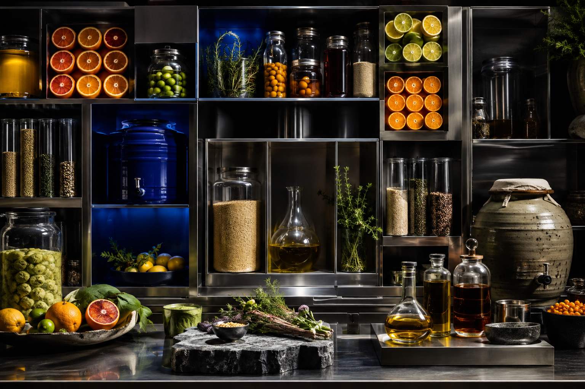

LAB MANIFESTO / 01
Method that leaves room for instinct.
We translate cooking into observable actions so home cooks can understand why a result changed, then make the next adjustment with confidence.

OPERATING PRINCIPLES
Four rules guide every experiment.
- 01
Control the comparison
Change one meaningful variable at a time. A useful test gives the cook a clear answer they can apply again.
- 02
Use sensory evidence
Time and temperature matter, but sound, aroma, colour and resistance tell you what the food is doing now.
- 03
Record the serving context
Pan size, portion, room temperature and resting time shape a result. Notes should describe those conditions honestly.
- 04
Respect safety and limits
Experiments never replace food-safety guidance, allergy checks, appliance instructions or professional advice.

THE ARCHIVE
Build memory outside your head.
Keep short notes on quantities, pan, heat, timing, sensory cues and the final result. The best record is small enough to use while cooking.